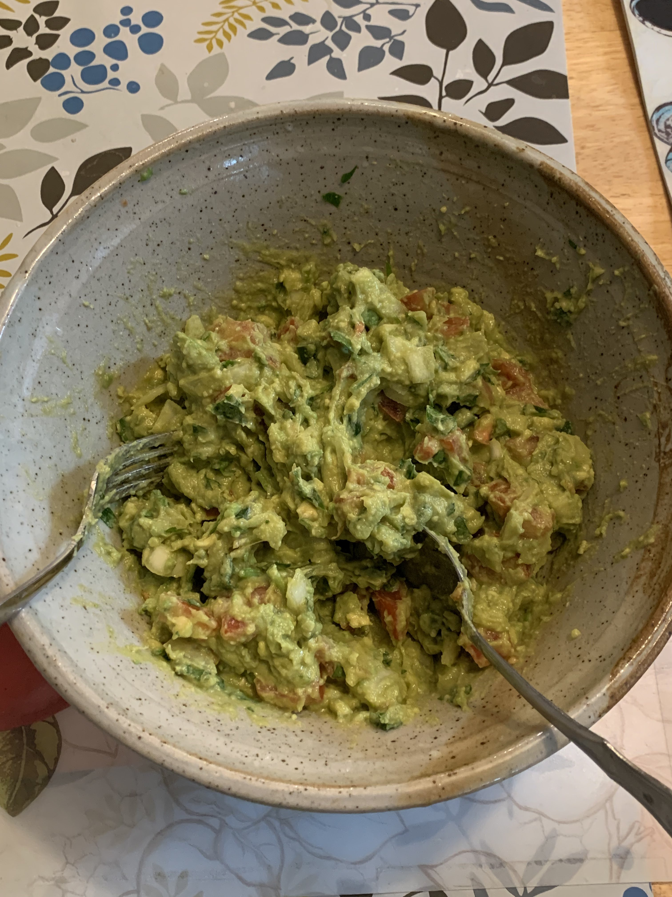

Guacamole

This is a picture of my guac. I happened across this from reddit (easy to find if you google for best guac recipe).
This tastes SO good. One of the ways to ensure it tastes good is to use fresh ingredients and also tasting it at the end to adjust, and stopping when you can't stop eating.
- 2-3 avocados
- 1 small tomato
- 1 small onion
- 1 jalapeno
- 1 lime
- tabasco
- salt
- optional cilantro
- Dice tomato, onion, jalapeno
- Cut and scoop out avocados and combine with the dicedeth in a large bowl
- Add the lime juice with cilantro, tabasco and salt and start mashing until chunky
- Taste test with tortilla chips and add to your liking (more sour, more salty, etc)
- Enjoy!!!